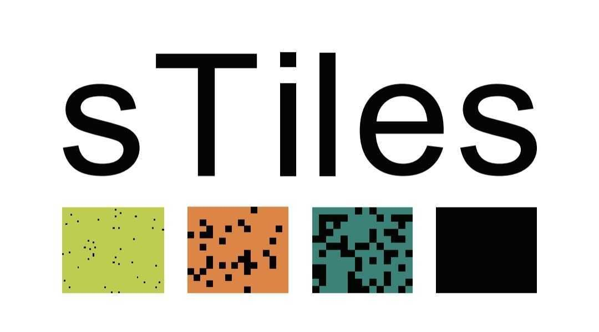
Selected Inversion
GPU-Accelerated Parallel Algorithms for Structured Sparse Matrices
Esmail Abdul Fattah
esmail.abdulfattah@kaust.edu.sa
King Abdullah University of Science and Technology
Hatem Ltaief, Håvard Rue, David E. Keyes
Introduction
What is Selected Inversion?
Computing only the inverse elements that matter
Problem
Given a sparse matrix A, we need specific elements of A-1. However, the full inverse is typically dense, making direct computation prohibitive.
Key Idea
Compute only (A-1)ij where Aij ≠ 0, preserving the sparsity pattern.
Motivation
Real-World Arrowhead Matrices
Different sparsity levels, same selected inverse structure
Matrix A (sparse)
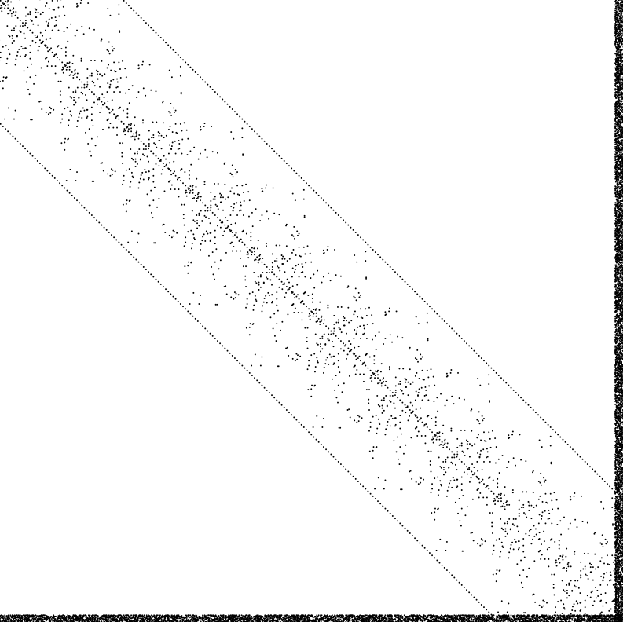
Few spatial locations
Matrix B (denser)
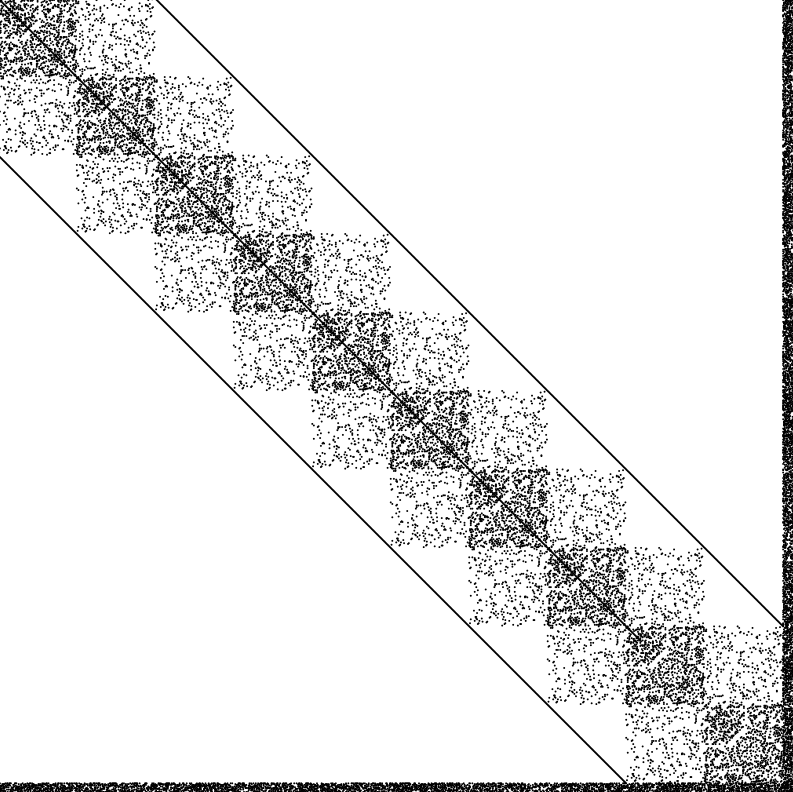
More spatial locations
Selected Inverse
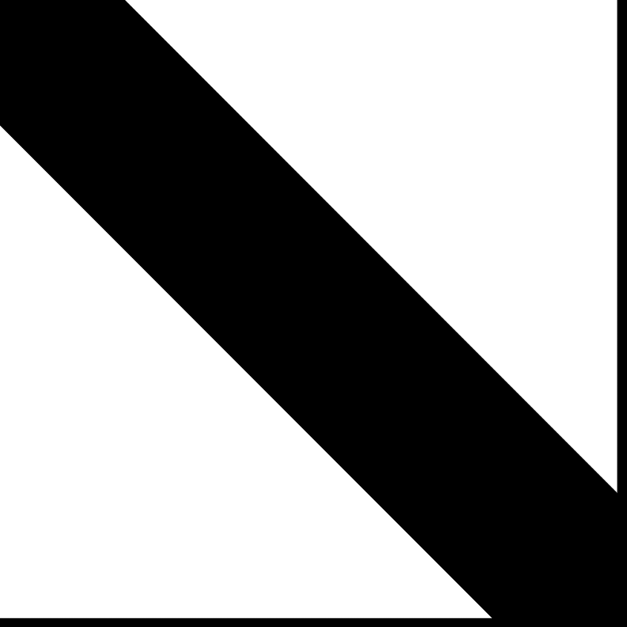
Same dense arrowhead!
Same dense arrowhead!
Key Observation
Regardless of initial sparsity, the selected inverse retains the arrowhead structure. This enables efficient tile-based computation.
Why Arrowhead Structure?
Arrowhead matrices arise from Kronecker products modeling space-time dependencies:
- Spatio-temporal models
- Gaussian Markov Random Fields
- Hierarchical Bayesian models
Real Applications
Data Structure
Tile Mapping
From scalar indices to contiguous tile storage
Scalar Index
Element position in matrix
Tile Index
Tile containing element
Linear Storage
Contiguous memory layout
Why This Matters
Tiles are stored contiguously in memory, enabling cache-efficient BLAS-3 operations and predictable memory access patterns.
Core Concept
How Selected Inversion Works
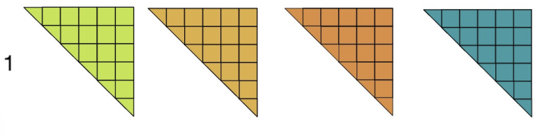
full → full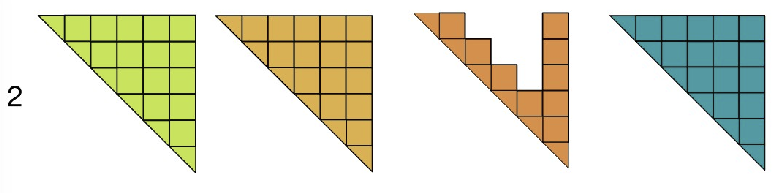
diag → full!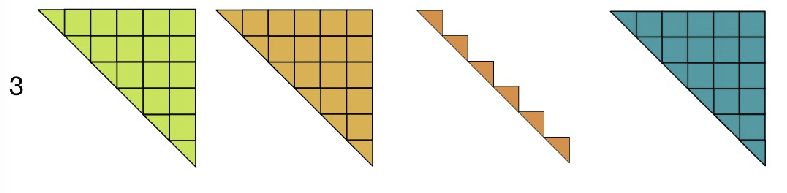
diag+ → full!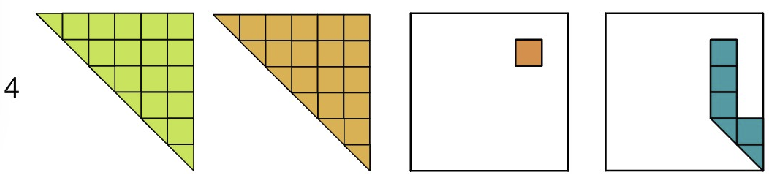
off-diag → min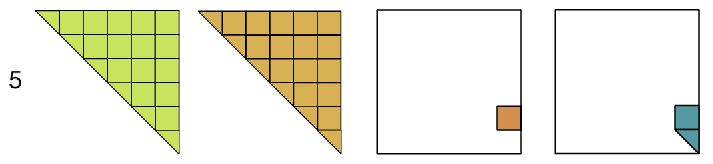
corner → min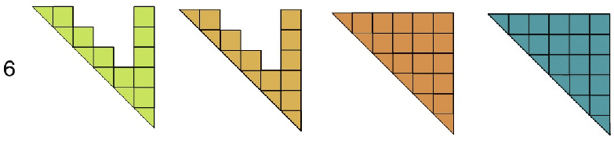
full → full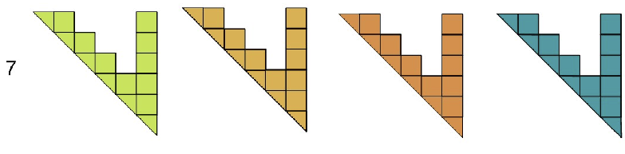
arrow → arrow! ★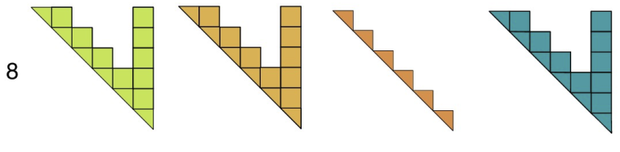
partial → partial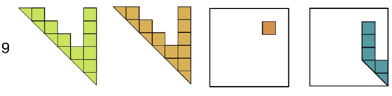
off-diag → min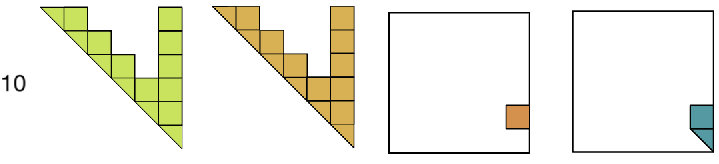
corner → minAlgorithm
Tile-Based Inversion
3×3 tiled matrix example: LTΣ = L-1
Σ (inverse)
Anti-Diagonal Parallelism
Level 3: Σ₁₁ and Σ₂₀ on same anti-diagonal → no mutual deps → run in parallel!
Parallelization
Two-Phase Parallel Algorithm
3×3 tiled matrix example
P1 Phase 1: Diagonal Blocks ∥ PARALLEL
Phase 2: Off-diagonal + Updates
Σ₂₀ = -Σ₂₁ L₁₀ L₀₀-1 - Σ₂₂ L₂₀ L₀₀-1
Complete Recursive Equations
sTiles Optimization
- Skip zero tiles: only compute selected pattern
- Static scheduling: tasks pre-assigned per core
- No runtime overhead: task list computed once
Σ (inverse) - Parallel Execution
Parallel Speedup
Phase 1: All diagonals parallel. Phase 2: Anti-diagonal parallelism (Σ₁₁ ∥ Σ₂₀). Larger matrices = more parallelism.
Applicability
Beyond Arrowhead Matrices
Algorithm not restricted to arrowhead structure
Why Arrowhead?
- Motivates our study and performance evaluation
- Common in INLA-based Bayesian models
- Natural ordering preserves structure in L
- Compact dependency pattern → substantial savings
General Sparse SPD Matrices
- Dependencies determined by nonzero pattern of L
- Fill-induced closure often much smaller than full matrix
- Works with any fill-reducing ordering
- Same implementation applies to general patterns
Key Observation
Computing the inverse on sparsity pattern of A may require additional tiles due to fill in L, but does not imply computation becomes dense. Substantial savings are common in practice.
Note
Not forming a tile ≠ tile of A-1 is zero. We simply avoid forming tiles not required for the requested output.
Related Work
Selected Inversion: Library Landscape
Goal: compute A−1ij for all (i,j) in the sparsity pattern of A, not just a few entries
Non-zeros of A
(before fill-in)
→
compute A−1ij
at every (i,j)
where Aij ≠ 0
Selected entries of A−1
(same sparsity pattern)
MUMPS
Solves A·x = eᵢ per entry via elimination tree pruning. Efficient for few arbitrary entries, not for computing the full sparsity pattern.
Amestoy et al., SIAM J. Matrix Anal. Appl., 2001
PSelInv (PEXSI)
Supernodal left-looking selected inversion. Slower than PARDISO on large structured problems, with out-of-memory failures. PEXSI is not actively maintained.
Jacquelin et al., ACM TOMS, 2017 | Verbosio, PhD thesis, 2019
Serinv
Specialized for block-tridiagonal + arrowhead matrices only. sTiles targets general sparse SPD matrices beyond this fixed structure.
Maillou et al., arXiv:2503.17528, 2025
Panua-PARDISO ✓ chosen benchmark
State-of-the-art supernodal LLT solver, strongest competitor for full-pattern selected inversion.
Schenk et al., Future Gener. Comput. Syst., 2001 | Schenk & Gärtner, Parallel Comput., 2002
Experimental Setup
Test Matrices
Arrowhead structured matrices from INLA-based models
| ID | Size | Bandwidth | Arrow | Density |
|---|---|---|---|---|
| Small (10K) | ||||
| 1-3 | 10,010 | 100-300 | 10 | 0.4-0.6% |
| 4-6 | 10,200 | 100-300 | 200 | 3.9-4.1% |
| Medium (100K) | ||||
| 7-9 | 100,010 | 1K-3K | 10 | 0.1-0.3% |
| 10-12 | 100,200 | 1K-3K | 200 | 0.5-0.6% |
| Large (500K) | ||||
| 13-15 | 500,010 | 1K-3K | 10 | 0.02-0.05% |
| 16-18 | 500,200 | 1K-3K | 200 | 0.1-0.13% |
Matrix Structure
Arrowhead: Block diagonal + dense last row/column
Bandwidth: Width of diagonal band
Arrow thickness: Size of arrowhead blocks
GPU Test Case
Size: 50,010
Bandwidth: 15,000
High compute intensity for A100
Origin
Matrices reflect INLA-based Bayesian models for spatio-temporal data
Performance: Selected Inversion
sTiles vs PARDISO for selected inversion on 500K matrices (computing (A⁻¹)ᵢⱼ on sparsity pattern)
sTiles vs PARDISO

SelInv / Chol time ratio
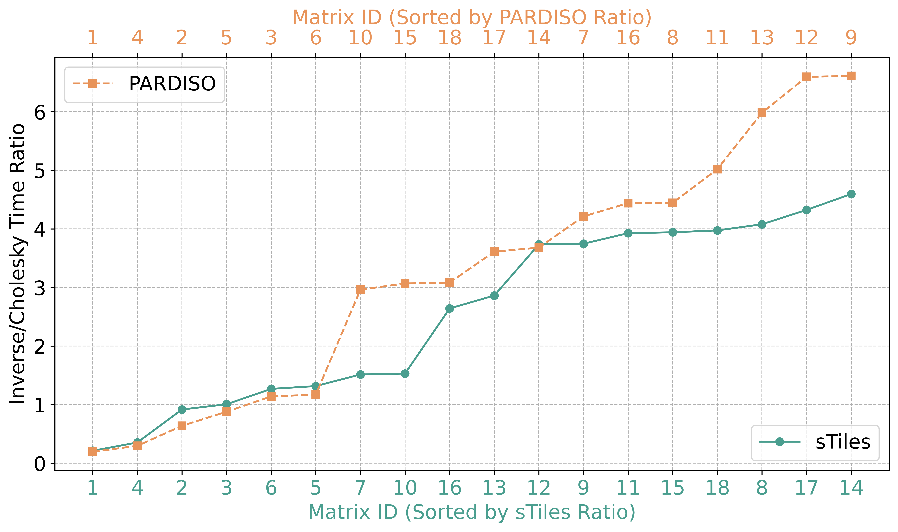
Reference: PARDISO Selected Inversion [Schenk et al., SIAM SISC 2007]
Scalability
Strong Scaling
AMD EPYC 7713 · 1-52 cores · 100K matrices
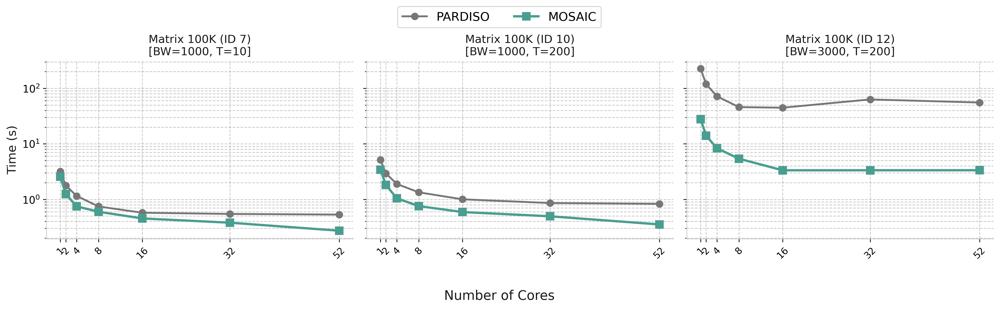
Key Observation
Matrix ID 12 (high bandwidth): 16× speedup at 52 cores. sTiles scales consistently while PARDISO saturates early.
Impact of Sparsity
100K matrices · AMD EPYC 7713 · 52 cores
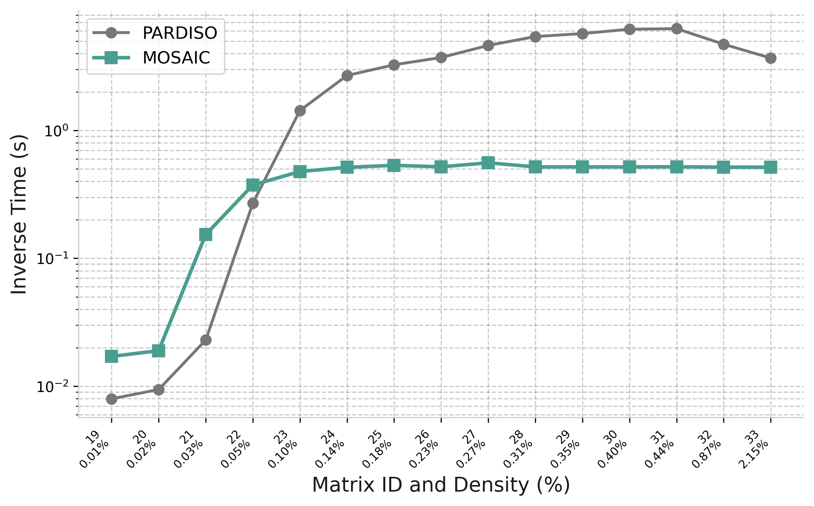
Bandwidth 1500
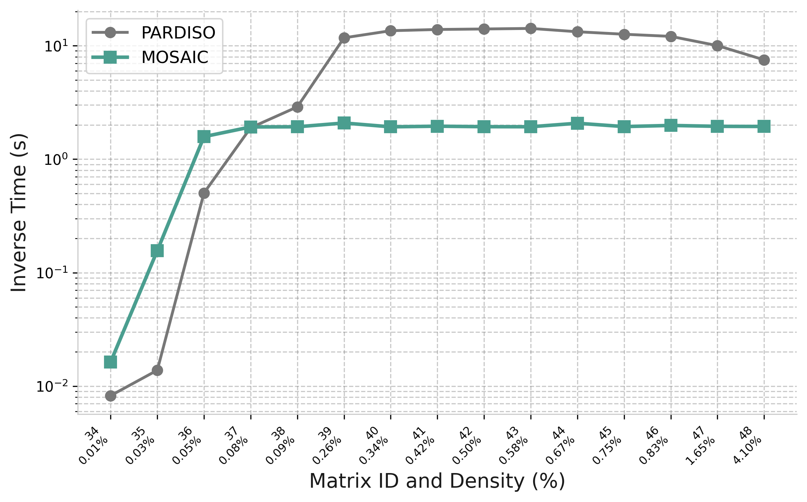
Bandwidth 3000
Applicability
Non-Arrowhead Cases: General Sparse Matrices
SuiteSparse matrices — sTiles tiling framework generalizes beyond arrowhead structure
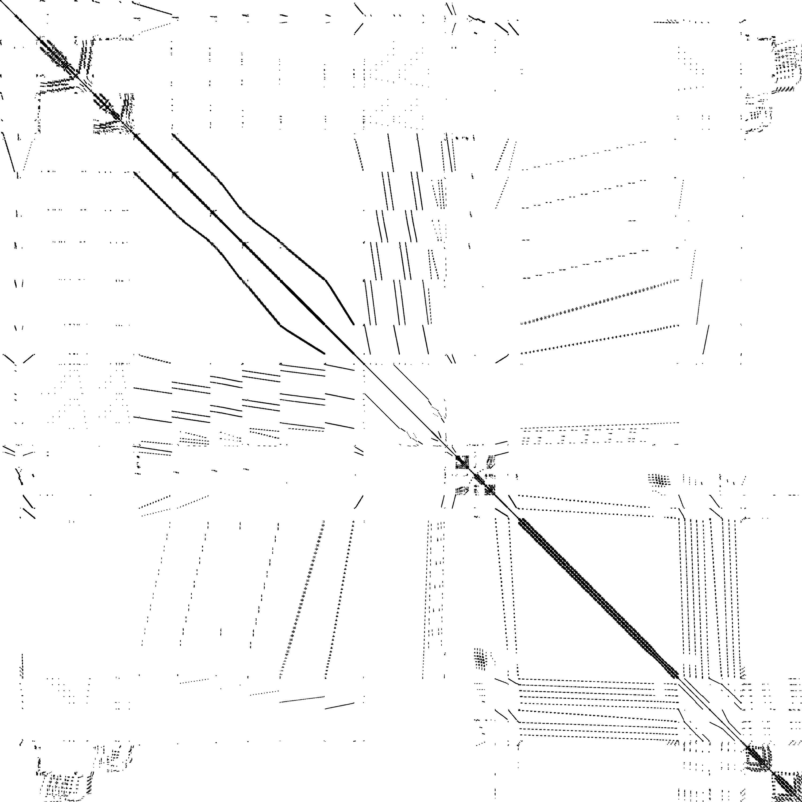
ship_001
n = 34,920 | nnz = 3,896,496
| # | P-Chol | P-SelInv | S-Chol | S-SelInv |
|---|---|---|---|---|
| 1 | 0.393 | 0.906 | 0.591 | 0.897 |
| 8 | 0.080 | 0.278 | 0.104 | 0.270 |
| 16 | 0.077 | 0.289 | 0.077 | 0.295 |
| 32 | 0.064 | 0.358 | 0.089 | 0.326 |
| 50 | 0.079 | 0.284 | 0.088 | 0.357 |
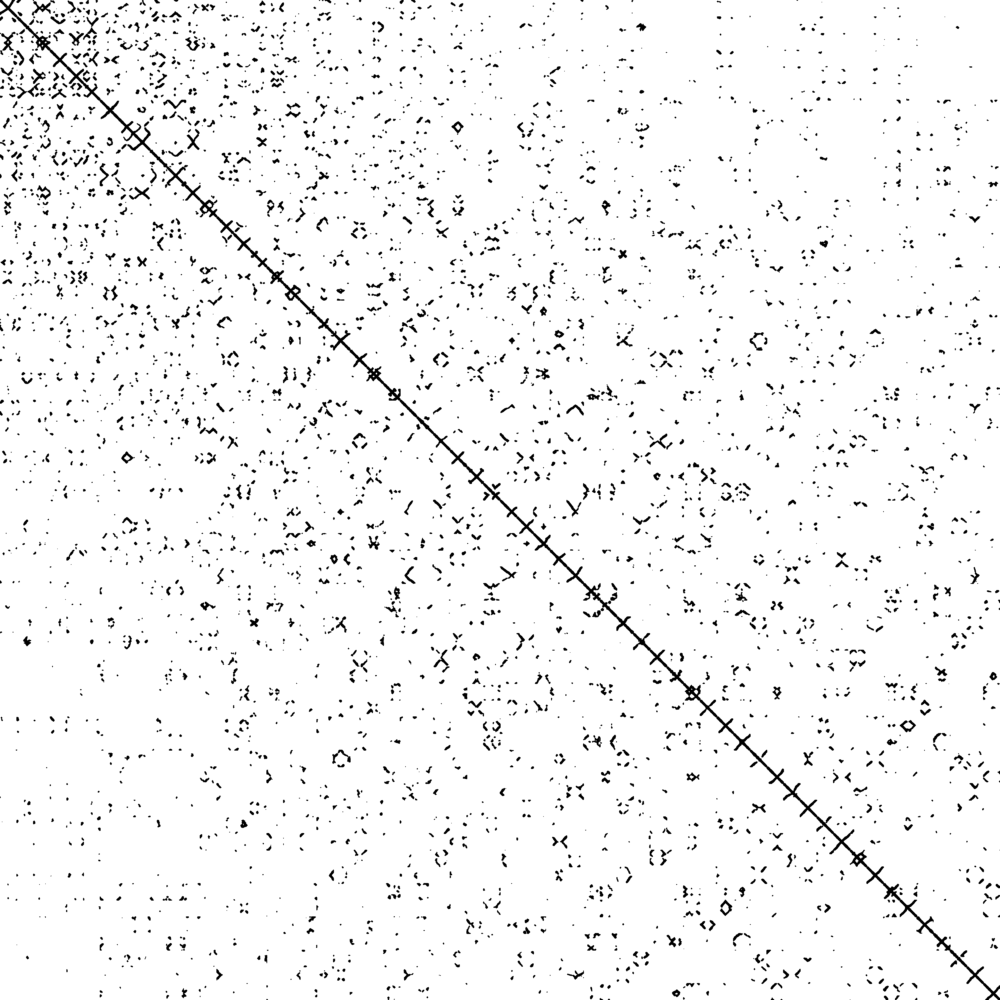
nd6k
n = 18,000 | nnz = 6,897,316
| # | P-Chol | P-SelInv | S-Chol | S-SelInv |
|---|---|---|---|---|
| 1 | 5.335 | 10.500 | 3.479 | 6.360 |
| 8 | 0.849 | 6.354 | 0.540 | 1.273 |
| 16 | 0.550 | 5.642 | 0.351 | 0.934 |
| 32 | 0.483 | 4.972 | 0.409 | 1.271 |
| 50 | 0.552 | 4.124 | 0.456 | 1.320 |
GPU Acceleration
Matrix 50K · BW=15000 · NVIDIA A100 vs AMD EPYC 7713
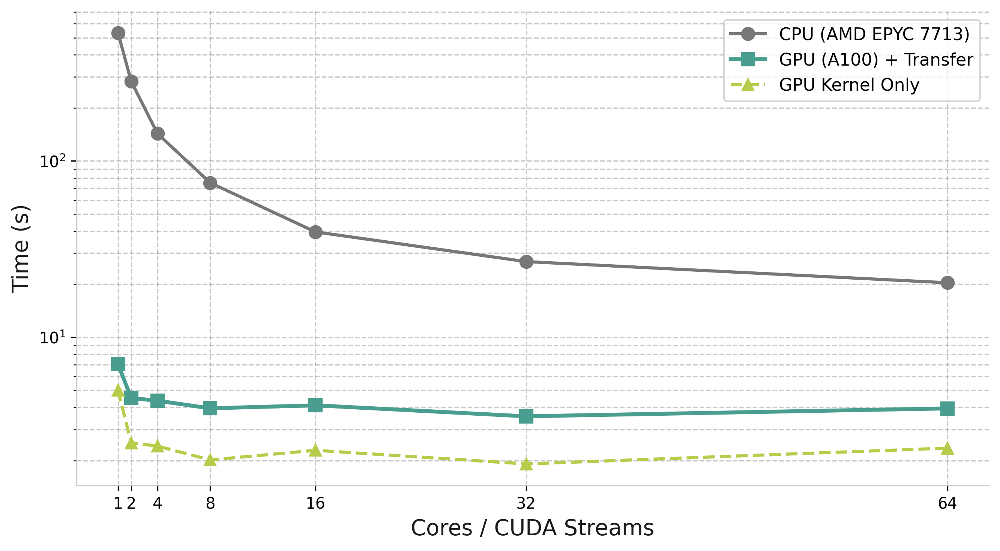
GPU Implementation
- Tile size 600 (vs 120 on CPU)
- cuBLAS/cuSOLVER kernels
- CUDA streams per host thread
Trade-off
Large tiles maximize kernel throughput but reduce task parallelism.
Conclusion
Summary
Contributions
- Tile-based algorithm for selected inversion
- Two-phase approach maximizing parallelism
- GPU acceleration with cuBLAS/cuSOLVER
Key Results
- Competitive with PARDISO; faster on high-bandwidth matrices
- 5.7× faster on A100 vs 64-core EPYC
- Stable across sparsity levels
Future Work
- Multi-GPU support
- Distributed memory systems
Impact
Enabling faster Bayesian inference for large-scale spatial statistics.
Thank You
Questions?